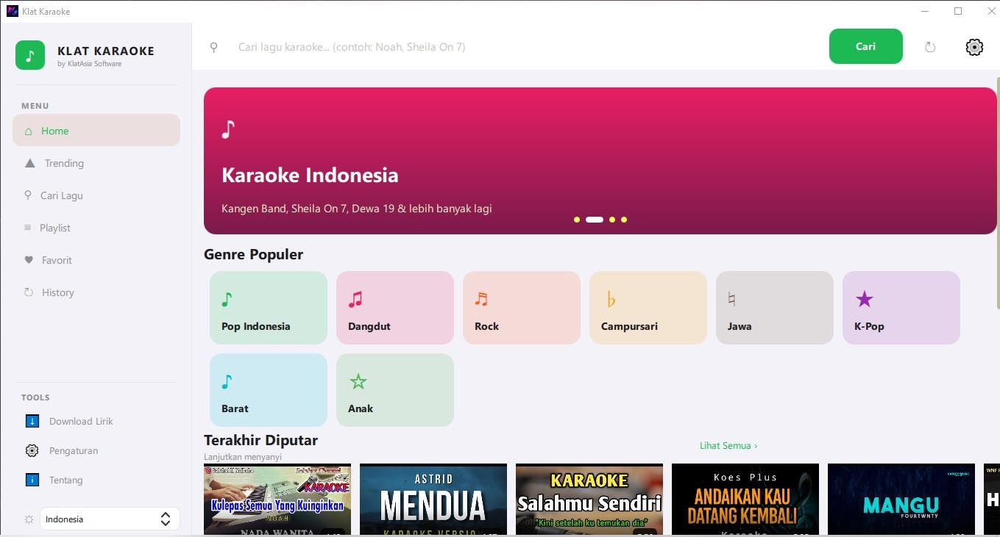

YouTube Karaoke Search
Search millions of karaoke songs from YouTube. Find any song by title, artist, or language. Instant playback with synced lyrics overlay on screen.
Free karaoke player for Windows & Linux. Sing along with synced lyrics, search millions of karaoke songs from YouTube, dual display mode for karaoke TV output, recording, scoring, effects, party mode, and playlist management. No ads, no subscriptions, completely free.

Search millions of karaoke songs from YouTube. Find any song by title, artist, or language. Instant playback with synced lyrics overlay on screen.
Real-time synced lyrics with karaoke-style color highlighting. Highlighted words follow the beat. Customizable font size, color, and position on screen.
Mirror or extend karaoke display to a second screen or TV. Control panel on your laptop, lyrics on the big screen. Perfect for home karaoke setups and parties.
Built-in vocal effects: reverb, echo, delay, pitch shift, and autotune. Adjust key and tempo of any song. Mic volume and EQ controls for professional sound.
Record your karaoke performance with vocals and background music mixed. Export as MP3 or MP4. Share recordings with friends or save your best performances.
Automatic pitch scoring based on vocal accuracy. Leaderboard for party mode. Compare scores between singers. Fun competition mode for group karaoke nights.
Create and manage song queues. Drag & drop reordering. Party mode with automatic rotation so everyone gets a turn. Save playlists for different occasions.
Search by title, artist, or lyrics. Browse trending karaoke songs. Filter by language (Indonesian, English, Korean, Japanese, etc.). Recently played and favorites lists.
Party mode with random song selection, countdown timer between songs, audience vote, and visual effects. Background visualizer and disco light effects for atmosphere.
Turn your living room into a karaoke bar. Connect your laptop to the TV, plug in a USB mic, and sing all night. Dual display shows lyrics on TV while you control from laptop.
Birthday parties, family gatherings, holiday celebrations. Party mode with queue rotation ensures everyone gets to sing. Score competitions add fun and excitement.
Small KTV rooms and karaoke cafes. Dual display, professional vocal effects, recording, and playlist management. No licensing fees - uses free YouTube karaoke content.
School talent shows, community events, team building activities. Easy setup, scoring system for competitions, and recording for sharing highlights.
v1.0.0
v1.0.0
Yes! Klat Karaoke is 100% free and open source (GPL-3.0). No subscription fees, no ads, no in-app purchases. All features including recording, scoring, and dual display are free.
Yes, a USB microphone is recommended for the best experience. Klat Karaoke works with any standard USB mic, headset mic, or audio interface. You can also use your laptop's built-in mic for testing.
Klat Karaoke searches YouTube for karaoke versions of songs. There are millions of karaoke tracks available with synced lyrics. You can also use your own local MP3/FLAC files with LRC lyrics.
Yes! Dual display mode lets you show lyrics on a TV/projector while keeping the control panel on your laptop screen. Supports HDMI, VGA, and wireless casting (Chromecast).
Yes! Klat Karaoke supports songs in any language including Indonesian, English, Korean (K-Pop), Japanese (J-Pop), Chinese, Spanish, and more. You can filter search results by language.
Yes! Klat Karaoke can record your vocals mixed with the background music. Export as MP3 (audio) or MP4 (video with lyrics overlay). Perfect for sharing performances or reviewing your singing.